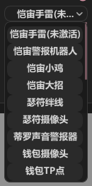

CLS菜单文档
前言
请先阅读开启教程文档, 本文档只介绍部分菜单, 字面意思的内容不再赘述
CLS承诺所有功能及解密均为只读不动任何内存
Global
Home


- 盒子设置
- "盒子回报率": 指软件每秒调用盒子鼠标移动的次数, 回报率越高自瞄效果越好
- "API等待时间": 指自瞄线程最低多少毫秒执行一次, API等待时间越低自瞄效果越好!
- 如果自瞄移动过头/自瞄抖动乱晃 需要调高"API等待时间"
- "API等待时间调法": 每次+1调整, 直到无上述现象
- "自动急停支持": 如果盒子没插键盘 或 盒子不支持(急停不正常/急停后无法移动) 都关闭. 关闭后自动急停不生效
- 已知只有KMBoxNet完美支持自动急停
全局设置

Aimbot
提示: 每类武器单独配置参数! 先点上方你手拿的武器类型图标再调参!
- 例: 霓虹和婕提大招都是飞镖图标 钱包Q是左轮图标 钱包大招是大狙图标
锁可破坏的道具/陷阱(可视时):
- 提示: 需自瞄键和此热键一起按才生效
- 


演技/暴力 -> 演技


-
磁力扳机: 效果等于磁力自瞄+演技扳机, 但磁扳的扳机延迟固定0ms, 每类武器的扳机后座判断和扩散判断到"演技扳机"菜单里设置
-
模型可视检测 (静态/动态):
- 模型 – 支持冰墙/薇丝墙: 支持道具墙的可视检测
- 模型 – 支持球烟: 支持球烟的可视检测
- 模型 – 忽略’部分’可穿掩体: 在暴力模式介绍
- 离索盾球最高优先级(可见时): 如果盾球和敌人同时可见, 强制优先打盾球
- 锁可破坏的道具/陷阱(可见时): 自己调整要锁的列表以及快捷键
- 目标移速限制(0=不限制): 当敌人移速过快时不会自瞄(如Jett的E技能)
- 曲线讲解 / 最大曲线步数:
- "曲线": 指利用曲线算法规避反作弊鼠标轨迹检测, 曲线轨迹在曲线设置菜单调整

- "曲线步数": 一次鼠标移动需要分成多少段完成
- 步数越多曲线越明显, 同时自瞄速度也会越慢
- "曲线": 指利用曲线算法规避反作弊鼠标轨迹检测, 曲线轨迹在曲线设置菜单调整
-
自瞄速率 (磁力/磁扳):
- 自瞄速度由多方面影响: 自瞄速率 / 盒子回报率 / API等待时间 / 最大曲线步数
-
磁力自瞄速率 (准心离目标较近时): 当准心离目标较近时自瞄速率为此值
- 此项用于缓解当自瞄速率较低时 锁到头后敌人移动因自瞄速率低跟不上人
- 提示: 当准心离目标较近且目标移动时, 曲线步数会自动降低
-
移动补偿 (自身移动): 此值越大, 当自身移动时自瞄速度越快(与自身移动速度成比例)
- 此项解决自身移动时自瞄跟不上人
- 例如玩霓虹滑铲喷 把霰弹枪移动补偿拉高
- 目标切换延迟: 自瞄目标切换时的间歇时间
- 例如自瞄锁A, 击杀A后自瞄瞬间切换目标到B, 当此值为500ms时 会等500ms再锁B
- 鼠标曲线设置:
- 调整曲线: 鼠标拉动UI的红点和蓝点调整曲线
- 随机浮动:
- 此值是为防止反作弊检测固定曲线而随机变化, 目前反作弊并无此类检测, 因此全0即可
- 4个滑动条对应UI上红点和蓝点的位置
- 例: 曲线UI红点x坐标是0.5, 随机浮动的红点X是0.2, 则实际的红点x坐标为 0.5 +/- (0 ~ 0.2之间)
- 曲线预览: 预览曲线随机浮动后的效果
- 调整曲线: 鼠标拉动UI的红点和蓝点调整曲线

演技/暴力 -> 暴力


- 暴力自瞄+自动压枪: 带自动压枪的暴力自瞄热键
- 暴力扳机+自动急停(仅可视时): 当模型检测敌人可见时, 暴力1帧拉枪+扳机
- 暴力自瞄+开火(穿墙 非扳机!)
- 无论敌人是否可见, 暴力1帧拉枪+开火
- 开火间隔会根据后坐力控制, 如需要更激进的开火间隔或0开火间隔后面会介绍
- 模拟静默: 模拟静默效果, 非追踪非内存
- 模型 – 忽略’部分’可穿掩体(HVH开):
- 建议配合使用 “暴力扳机+自动急停(仅可视时)”
- 模型检测会忽略部分戍卫可穿的掩体(如箱子 传送门等)
- HVH需要穿墙时开启此功能, 如果敌人在可穿掩体后并且此掩体为支持过滤的, 则此掩体会过滤掉, 使可视检测通过
- 注意: 只是过滤部分掩体! DMA软件无法像内存注入挂一样做到完美掩体可穿判断, 不要太依赖此功能, 依然主用”暴力自瞄+开火(穿墙 非扳机)”来穿墙
- 近距离更激进的开火间隔(戍卫): 与敌人距离越近, 戍卫的开火间隔会越小
- 扳机前压枪(0开火间隔 戍卫前3发稳):
- 无开火间隔 有多快打多快, 依靠开火前压枪来抵消后坐力 因此适合近距离才开启
- 注意: 瓦罗兰特不光有后坐力还有扩散, 两者都是不可预测且扩散完全随机, 因此只有前几发精准
演技扳机
提示: 仅当自瞄模式为"演技"时 此页功能才生效

-
扳机连发: AK为例 架枪一般2连发/3连发, 开启此项并调连发时间实现此效果
-
扳机延迟: 理解为扳机的反应时间 人类极限反应150ms左右
-
手持后座判断: 顾名思义 手持的武器/道具会判断后座, 仅无后座力时才扳机
- 如Jett飞镖判定为无后座力
-
手持移动扩散判断: 手持的武器/道具在移动时如有扩散, 则无扩散时才扳机
- 如钱包的Q左轮蹲着走判定为无扩散
ESP
玩家

提示: Dormant(迷雾)指瓦罗兰特的战争迷雾机制 游戏服务器认为不应有信息的敌人(比如隔了几堵墙) 则不会下发玩家坐标
-
如果不想绘制迷雾可自行关闭 迷雾颜色默认灰色

-
弹药条(FPS影响): 开了会读取子弹数量 轻微影响绘制FPS
技能

- 苏法探测箭连线: 敌方苏法射出探测箭时, 准心会和箭连线
陷阱

- 过滤无效陷阱: 过滤敌人死后则无效的陷阱
- 例如瑟符绊线会过滤, KJ已激活的手雷不会过滤等
- 瑟符绊线连线: 顾名思义, 瑟符绊线的两端会连线
烟雾

世界

Miscellaneous
其它功能

- 玩家信息揭露(Tab键): 游戏内按Tab显示玩家信息: [特工 昵称 段位 排行榜 等级]
- 队友信息揭露(特工选择时): 同理 特工选择时自动显示队友信息 无需按Tab
- 游戏小地图雷达: 阅读菜单说明
- 秒抢特工(特工选择界面按住热键):
- 此功能需要连接KMBox
- 匹配成功要进入特工选择时就按住热键, 会自动抢特工
- 不同电脑因配置和网速进入特工选择的时间不一致, 可能别人进的比你快就先抢了
- 秒抢方式: 遍历特工(慢):
- 秒抢方式: UI定位(快):

- UI位置: 要选的特工在游戏特工选择列表的第几行第几列, 建议先进自定义记好位置
- UI位置对应特工: 字面意思 如行2列3是婕提
- 外部准心:
- 在最顶层绘制准心, 防止绘制挡到游戏准心
- 外部准心完全和瓦罗兰特游戏准心设置1:1
自动背闪

- 请在[自定义模式]并关闭[密技->暂停时间]测试背闪参数 (不要在靶场测试 否则背闪时机不准或失效!)
网页雷达

提示: 仔细阅读雷达搭建教程文档
提示: 雷达不支持训练场和团队死斗地图, 只支持普通地图
道具点位

提示: 软件自带的默认点位只有几张地图 (2025年6月)
提示: json点位文件路径在"辅助目录\UserData (参数 点位 cpuid 版本号文件 都放里面)\Lineups.json"
- 自带的Lineups.json只录入了三个图的点位数据, 需要其它地图点位请自行录入

- 过滤当前技能:
- 例: 手持C技能, 则只显示C技能的Lineup点位
- 如果特工的道具无法切出来拿到手上(例如保安的Q技能一掏出来就扔了), 则关闭此选项
- 如何添加点位: 拿好道具并瞄好点位, 输入点位信息 点添加按钮

参数列表

提示: 为防止误操作 参数不会自动保存 需手动点击保存和加载
如何新建参数: 右上角输入新参数名后 点新建参数按钮